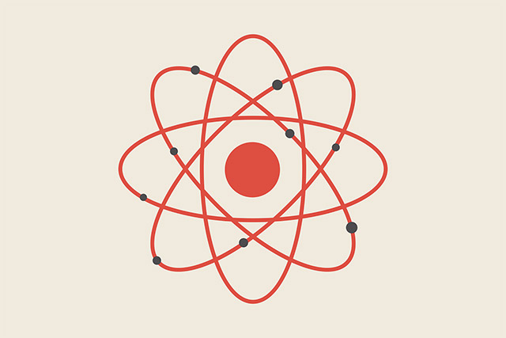

Атом
Кто предложил первую модель атома?
1904г. - Томпсон предложил модель атома "булка с изюмом"
снизу демонстрация этой модели
В 1911г. - Резерфорд проводит опыт.
Что такое Альфа-частицы?
Альфа-частицы возникают при распаде Радия.
Модель атома по Резерфорду.
- Электроны не могут изменить траектории Альфа-частиц.
- Рассеивание Альфа-частиц может вызвать только положительно положительно заряженые частицы.
Кто открыл нейрон?
Чедвик открывает нейтрон,
масса нейтрона > массы протона(почти одинаковы).
Заряд электрона:
e = -1.6 * 10-19 Кл
Заряд Протона
p = 1.6 * 10 -19 Кл